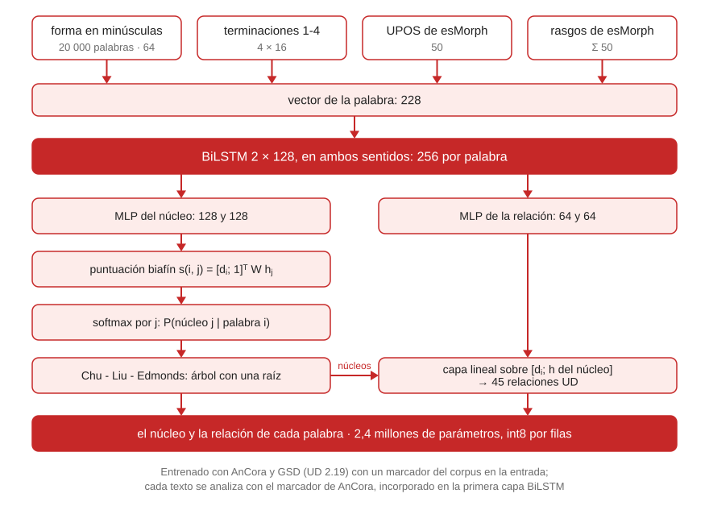
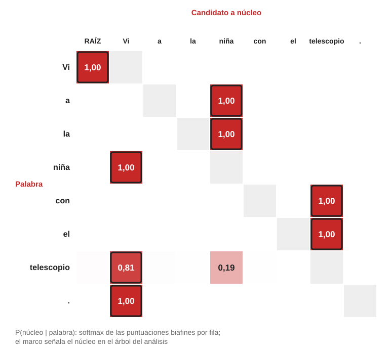

Modelo¶
El modelo del paquete va dentro del módulo de extensión: no hace falta ningún archivo de pesos, y Parser() lo carga en unos 5 ms. La calidad y la velocidad frente a otros analizadores están en la página de comparación.
Arquitectura¶
- Entrada de una palabra - la forma en minúsculas (las 20 mil formas más frecuentes de los datos de entrenamiento, un vector de 64; las demás formas son desconocidas), las terminaciones de 1 a 4 letras con una marca de comienzo de palabra (un vector de 16 cada una), y la categoría gramatical de UD y la suma de los vectores de sus pares de rasgos (50 cada uno), tal como los da esMorph en contexto.
- Codificador - una LSTM bidireccional, dos capas de 128 por sentido: cada palabra ve la oración entera.
- Núcleos - una puntuación biafín de cada par «palabra - candidato a núcleo» sobre proyecciones de 128, y el árbol con la mayor suma de puntuaciones y una sola raíz (el algoritmo de Chu - Liu - Edmonds), así que también son posibles los árboles no proyectivos.
- Relaciones - una puntuación lineal del par «dependiente - núcleo» sobre proyecciones de 64 para 45 relaciones de UD con subtipos.
- Treebank - en el entrenamiento la entrada de una palabra lleva además la marca del treebank de su oración, así que las convenciones de AnCora y de GSD no se mezclan. El modelo del paquete analiza todo texto como AnCora: la marca de AnCora va incluida en el sesgo de la primera capa de la LSTM.
- Pesos - 2.4 millones de parámetros, matrices en int8 por filas con una escala por fila; el archivo ocupa 2.9 MB con los vocabularios de formas y terminaciones.

Elección del núcleo¶
El modelo da a cada palabra una probabilidad para cada candidato a núcleo: el softmax de sus puntuaciones biafines sobre las palabras de la oración y la raíz. En Vi a la niña con el telescopio. el núcleo de telescopio no es seguro: Vi - el telescopio es el instrumento de ver, obl - recibe 0.81, y niña - la niña tiene el telescopio - recibe 0.19; todas las demás palabras tienen su núcleo con una probabilidad de 1.00. El árbol toma los núcleos más probables salvo que formen un ciclo o varias raíces; entonces Chu - Liu - Edmonds encuentra el mejor árbol con una sola raíz. Las probabilidades se devuelven con probs=True (véase parse); los números de la figura los calcula scripts/figures.py con el modelo del paquete.

Entrenamiento¶
El modelo está entrenado con las partes de entrenamiento de los treebanks UD Spanish AnCora y UD Spanish GSD de la versión 2.19 de UD: 453 mil palabras de noticias en AnCora y 383 mil palabras de textos de la web en GSD. Las palabras son las de los treebanks, y sus categorías gramaticales y rasgos los da esMorph 0.6.0 en contexto: así el modelo aprende con las etiquetas del mismo analizador que tiene el usuario, no con las de referencia. Dos tipos de ruido hacen al analizador robusto frente a los errores de etiquetado y a los rasgos que faltan: el 5 % de las palabras ambiguas recibe otro análisis de esMorph con otras etiquetas, y se quita el 10 % de los pares de rasgos; sin ningún rasgo en la entrada el LAS en AnCora dev baja unos 0.9 puntos.
El punto del entrenamiento se elige por el LAS en AnCora dev, y GSD dev sirve de control. De tres entrenamientos, el que tiene el mejor LAS en AnCora dev es el modelo del paquete: 89.42 en AnCora dev y 81.92 en GSD dev (parser.sources["dev_las"]).
make model reproduce el entrenamiento: scripts/export_ud.py descarga los treebanks y comprueba su SHA-256, y scripts/train.py con las versiones de los paquetes fijadas (scripts/train.py.lock) entrena el modelo y escribe los pesos en data/es-syntax.bin. El modelo del paquete es el entrenamiento con la semilla 3 (parser.sources["seed"]), y make model pasa --seed 3 para repetirlo. En MPS y en GPU el entrenamiento no es determinista: repetirlo da pesos cercanos, pero no iguales. Junto con los pesos escribe data/check.conllu - el análisis de las 200 primeras oraciones de AnCora dev por el mismo modelo en PyTorch: una prueba del crate comprueba con él el paso hacia adelante en Rust.
Calidad¶
LAS en las partes de prueba de los treebanks de UD 2.19 (el script de evaluación de CoNLL 2018, con la puntuación), %:
| Entrada | AnCora | GSD | PUD | COSER |
|---|---|---|---|---|
| Texto a través de anySeg y esMorph | 89.25 | 80.95 | 81.97 | 65.52 |
| Palabras de referencia con etiquetas de esMorph | 89.44 | 81.68 | 82.21 | 67.03 |
La primera línea es lo que dan parse_text y el comando para un texto sin procesar; la segunda deja fuera los errores del segmentador. AnCora y GSD son los treebanks del entrenamiento; PUD (oraciones traducidas de noticias y de Wikipedia) lo anotó Google con la misma guía que GSD, y COSER (habla rural transcrita) es nuevo para el modelo.
Convenciones¶
Las relaciones siguen la guía de Universal Dependencies y, donde calla, las convenciones de AnCora, el mayor treebank del español. Un clítico dativo y un objeto indirecto con a son obl:arg, no iobj, como en los dos treebanks (Le di el libro a María.); se de una pasiva es expl:pass (Se venden pisos.), mientras que GSD marca casi todo se como expl:pv.
El modelo tiene dos puntos débiles conocidos. Una oración corta con a y un sustantivo tras un verbo de movimiento (Voy al cine.) puede recibir obj para el sustantivo en lugar de obl. Los clíticos de objeto directo me, te, nos y os casi nunca reciben obj: en Te quiero mucho. el clítico recibe expl:pv, en Me miró., obl:arg; esMorph suele etiquetar estos clíticos como dativos y a veces como reflexivos, y el modelo aprendió las relaciones de sus etiquetas.
Modelo propio¶
Parser(path) carga un modelo de un archivo del formato de esSyntax - por ejemplo, uno entrenado con scripts/train.py con otros datos. El archivo se comprueba al cargarlo: la firma, la versión del formato, la suma de comprobación y los tamaños de todos los pesos. Cómo se entrenó el modelo está en parser.sources, y sus relaciones en parser.relations.
Licencia¶
El modelo está entrenado con datos bajo las licencias CC BY 4.0 (AnCora) y CC BY-SA 4.0 (GSD) y se distribuye bajo la licencia CC BY-SA 4.0 (LICENSE-MODEL.txt); el código de esSyntax está bajo la licencia MIT.